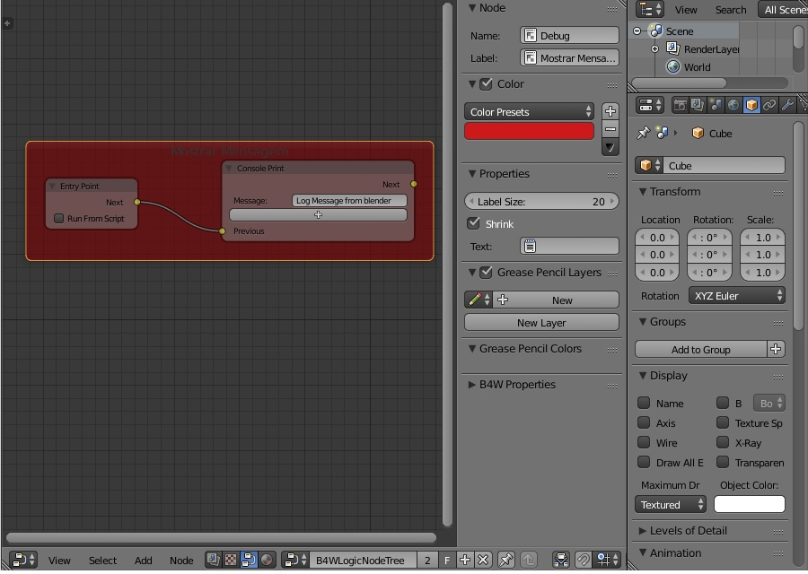

Neste Tutorial Vamos Editar as Propriedades do Nó de Frames, que é uma região onde o Código fica Separado dos Demais.

Com o Editor de Nodes expandido em sua Área de Trabalho no Blender 2.79, você pode organizar seu código para melhor Edição do Código de seus projetos 3D, uma das formas é separar áreas independentes em Frames.
Para adicionar um novo Frame vá em Add no menu do painel Node Editor, selecione o submenu Layout em seguida Frame, clique e posicione o Frame na área quadriculado do Node Editor.
Na área editável do Painel de Node Editor Pressione [N], ou clique no botão [+] localizado no canto superior direito do Painel. Que vai mostrar algumas das propriedades ajustáveis do Nó.
No campo Name você adiciona o nome do Frame. No campo Label você adiciona o texto que será exibido no topo do Frame. No campo Color você pode adicionar a cor clicando no respectivo seletor de Cores que é um dos widgets interno do Blender. No campo Label Size você seleciona o tamanho da Fonte de Texto do Frame
Pronto, estas foram as opções principais de frame, agora você tem um Objeto com Inspeção do Código bem customizado e de fácil leitura.
Para Voltar ao Menu inicial:
<< Voltar